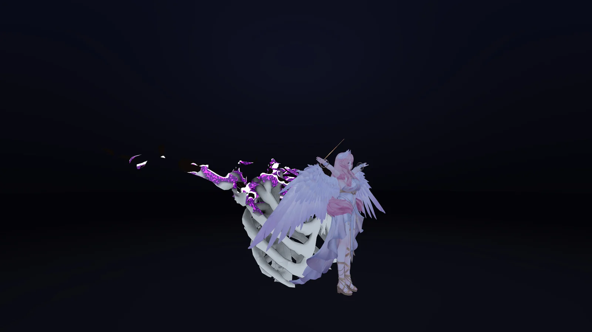
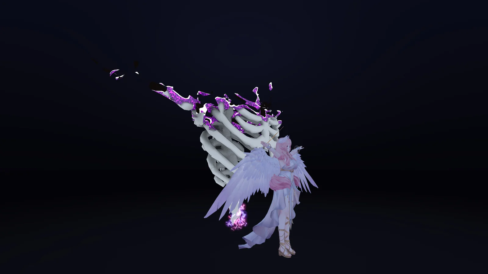
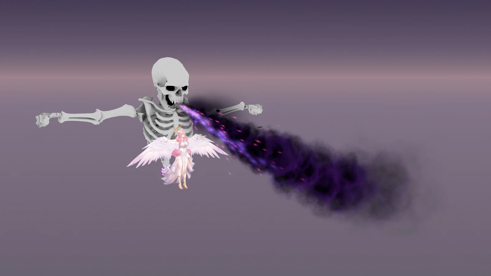
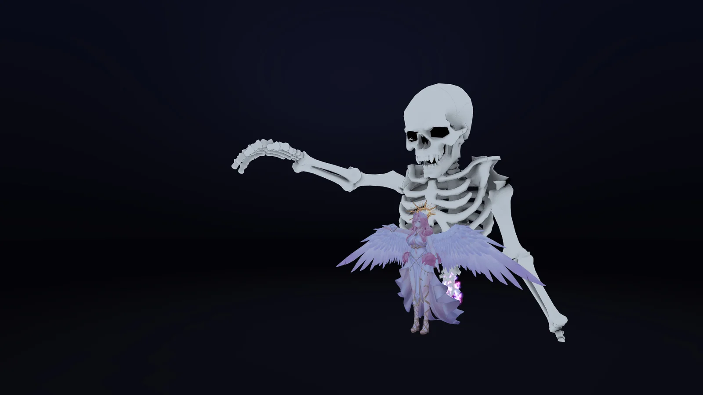
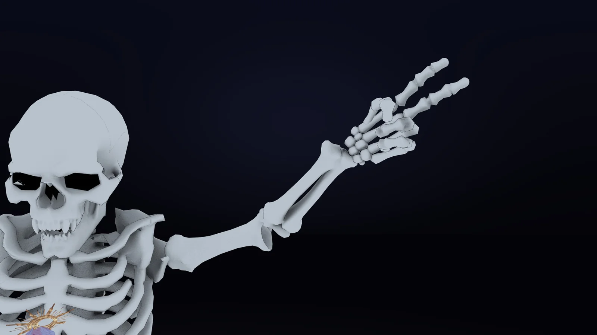
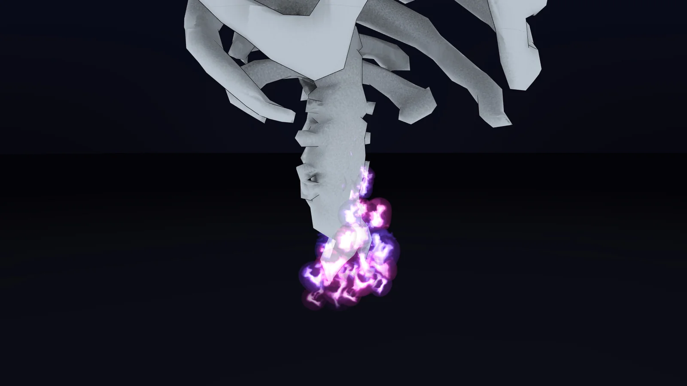

背後に出現
自分の約1m後ろに、身長の数倍ある骸骨の上半身が現れます。歩いたり体の向きを変えたりしても、背後の位置を保ってついてきます。しゃがんだり前かがみになったりしても、骸骨の高さは変わりません。
アバターに入れて、1回ボタンを押して体格を合わせるだけで動きます。
自分の約1m後ろに、身長の数倍ある骸骨の上半身が現れます。歩いたり体の向きを変えたりしても、背後の位置を保ってついてきます。しゃがんだり前かがみになったりしても、骸骨の高さは変わりません。
出現は約3.6秒。紫に燃える境界が下から骨を形づくります。消すときは約3.2秒かけて、上から焼け落ちるように消えます。燃えている断面は暗闇でも光ります。
両手の位置と肘の向きを、骸骨の大きさに合わせて写します（Final IK を使っています）。
フルトラッキングのときは、背骨・胸のひねりや傾きを写します。3点トラッキングとデスクトップでは、胴が細かく揺れないよう、胴は動かしません。頭は、自分の頭の正面2mの点を一緒に見ます。
グー・パー・指差し・ピースなど8種類に合わせて、骸骨の指も曲がります。グーはトリガーの押し込みに合わせて握り込みます。
両手をグーにして1.5秒続けると、骸骨が口を開き、黒い瘴気の雲を約8m先まで吐きます。雲の中を紫白の光の筋が走り、桃紫の火の粉と灰が舞います。どちらかの手を開くと止まります。
千切れた背骨の下端で、紫の炎が燃え続けます。炎は青紫と桃紫の色を帯び、ちぎれながら立ち昇ります。
VRChatのメニューに「Gashadokuro」の切り替えが1つ入ります。オン・オフの状態は保存されます。
指・ブレスは、VRChatがもともと同期しているハンドジェスチャーで動くので、ほかの人にもそのまま見えます。
骸骨のモデルは、この商品のために作ったオリジナルです。






前提のツールを入れ、プレハブを置いて、1回ボタンを押して体格を合わせれば完了です。
次のものを事前に入れておいてください。
Stub はアップロードに必要な部品だけが入ったものです。VRChat上ではStubでも動きますが、Unity Editor上では骸骨の腕が動きません。
プレハブ「Gashadokuro」を、アバターのいちばん上の階層（アバターのルート）の直下にドラッグ＆ドロップします。
位置・回転・大きさは、初期値のまま変えないでください。
Hierarchy で「Gashadokuro」を選び、メニューの Tools > Nunifuchisaka > Gashadokuro > Fit To Avatar を実行します。骸骨の腕の長さ・肩の位置・掌の向きを、アバターの体格に合わせます。
この操作をしないと、骸骨の胴がねじれたり、腕が曲がったりします。
そのままアップロードします。
メニューの「Gashadokuro」をオンにすると現れ、オフにすると消えます。
両手をグーにして1.5秒続けると、ブレスを吐きます。どちらかの手を開くと止まります。
プレハブの中で変えられる値です。プレハブのルート（Gashadokuro）の位置・回転・大きさは変えず、その子の Big やマテリアルを調整してください。
アバター配下の Gashadokuro/Big のTransformを調整します。
| 項目 | 既定 | 説明 |
|---|---|---|
| Scale | 4 | 拡大率。出現・消滅の燃え際（Dissolve）は拡大率4に合わせてあるため、大きくすると腕を真上に上げたときに指先が欠けます。4より大きくしないでください |
| Position | (0, 0.4, −1.0) | 自分からの位置。zを小さくすると遠ざかり、yで高さが変わります |
肩の高さが合わないアバターは、Big の Position の y と Scale で追い込みます。
Material/Gashadokuro.mat のプロパティを調整します。
| プロパティ | 既定 | 説明 |
|---|---|---|
| _Color | 白 | 色の調整（ベースカラーのテクスチャに掛かります） |
導入前に確認してください。
Quest（Android）では、VRChatの仕様でFinal IKが動かないため、表示されません。
同じアバターをQuest（Android）向けにもアップロードするときは、このギミックを外してください（Android版のプロジェクトでは、プレハブを削除するか、EditorOnlyにします）。
Final IK は、VRChat側で独自に組み込まれたもので、公式にはサポートされていません。今後のVRChatの更新で、動きが変わる可能性があります。
物を両手で掴むと手がグーになるため、1.5秒以上掴み続けるとブレスが出ます。
壁や天井との当たり判定はありません。狭いワールドでは、骸骨が壁や天井にめり込みます。
腕を速く振ると、骸骨の手が少し遅れてついてきます。
腕を真下に下ろすと、骸骨の指先が床の下に入ります。
骸骨の腕は伸ばしきりません。自分が腕を伸ばしきっても、骸骨の肘は少し曲がったまま残ります（伸ばしきったときの肘の震えを抑えるためです）。
頭が向くのは、自分の頭の正面2mの点です。目だけで横を見る動き（アイトラッキング）は写りません。
指の動きは8種類のポーズだけです。1本ずつの細かい指の動きは写りません。
背骨の炎は、光を足して描く方式なので、ブルーム（光のにじみ）が強いワールドでは、炎の芯が広く光ります。シェーダーを非表示にしている人には、炎が見えません。
Bounds（大きさ）が各辺約15mになるため、このギミックだけでPerformance RankはVery Poorになります。骸骨を出していない（非表示の）ときも、同じように数えられます。
Liloumoisに入れて、VRChat SDKの性能表示（PC、Modular Avatarの処理後）で測った増加分です。
商品紹介に使用させていただいているアバターや衣装などは付属しません。